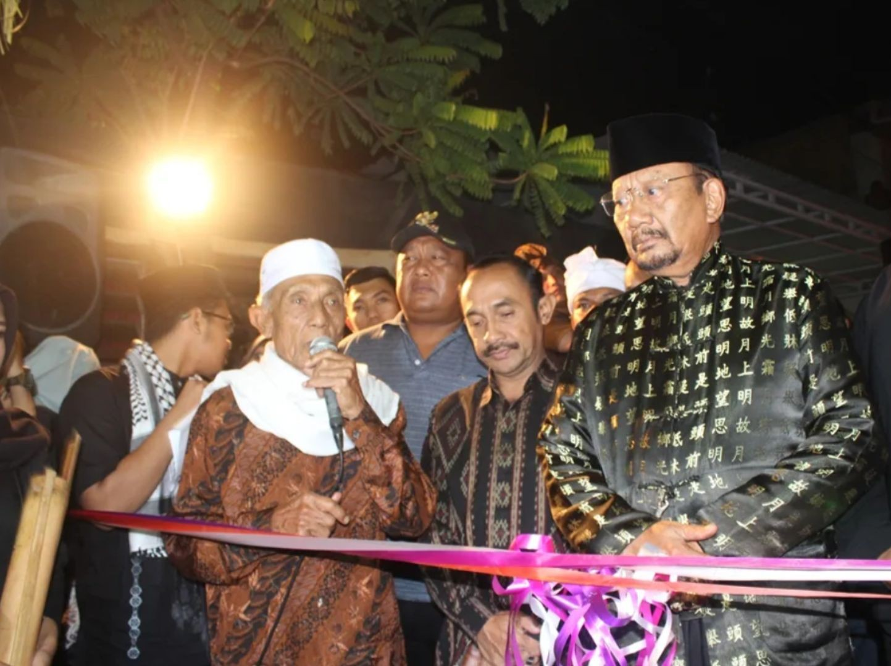

Perilaku dan Interaksi Masyarakat Hindu dan Islam di Kota Denpasar, Bali (Studi Kasus Pasca Perayaan Idul Fitri 1444 Hijriah)
Latar belakang
Indonesia dikenal beragam dalam suku, agama, ras, dan budaya, dan keberagaman itu menuntut warganya untuk saling menghormati. Dalam konteks agama, toleransi dipahami sebagai penerimaan terhadap perbedaan keyakinan yang ditunjukkan lewat sikap saling menerima dan menghargai, baik pada individu maupun kelompok. Prinsip Bhinneka Tunggal Ika menjadi pegangan bagi umat beragama untuk hidup berdampingan.
Bali dikenal sebagai Pulau Dewata dengan mayoritas penduduk beragama Hindu, tetapi tidak hanya dihuni umat Hindu. Salah satu agama lain yang mendiami Bali adalah Islam, agama mayoritas di Indonesia. Salah satu hari besar Islam, Idul Fitri, dirayakan sebagai momen saling memaafkan dan mempererat silaturahmi, dengan malam takbiran sebagai salah satu rangkaiannya. Di Kota Denpasar, umat Muslim tinggal mengelompok di kawasan yang dikenal warga sebagai “Kampung Jawa”. Kawasan ini juga dihuni umat Hindu dan memiliki banjar adat, sehingga dua komunitas hidup dalam satu ruang.
Ada ketegangan yang menarik di sini. Kehidupan kota cenderung individualistis, dan interaksi antarwarga sering renggang, sementara permukiman Kampung Jawa justru padat dengan ikatan sosial. Tulisan ini mengajukan pertanyaan, yakni bagaimana perilaku dan interaksi masyarakat Hindu dan Islam di Kampung Jawa, Denpasar, pada malam takbiran Idul Fitri 1444 H, dan apa artinya bagi hubungan sosial di ruang kota?
Data yang digunakan
Kajian ini memakai data sekunder, yaitu pemberitaan media dan dokumentasi foto peristiwa malam takbiran, yang dipadukan dengan konsep toleransi dan hari raya Idul Fitri dari literatur.
| Data | Jenis | Sumber | Peran dalam Analisis |
|---|---|---|---|
| Pemberitaan malam takbiran Kampung Jawa (2023) | Sekunder | ANTARA News Bali, ANTARA Foto | Rekaman peristiwa tahun yang dikaji |
| Pemberitaan pawai takbir di Bali (2017 dan 2018) | Sekunder | Tempo, Rappler, detikNews | Pembanding bahwa pola serupa terjadi di tahun-tahun sebelumnya |
| Dokumentasi foto | Sekunder | Gambar 1 dan Gambar 2 pada tulisan | Bukti visual interaksi dan tokoh yang terlibat |
| Pernyataan tokoh | Sekunder (dikutip dari berita) | Kepala Dusun Kampung Jawa dan Ketua Sekaa Teruna | Sudut pandang warga dan pemuda banjar |
| Konsep toleransi dan Idul Fitri | Literatur | Segara (2018) dan Suranta (2019) | Kerangka konsep |
Metode
Pendekatan
Tulisan ini memakai pendekatan kualitatif deskriptif dengan studi kasus tunggal, yaitu malam takbiran di Kampung Jawa, Kota Denpasar, setelah Idul Fitri 1444 H. Pemilihan kasus ini didasarkan pada dua hal, yakni kawasannya dihuni dua komunitas agama sekaligus, dan peristiwanya terdokumentasi baik di media dan foto.
Alur analisis
Analisis dilakukan dengan menelaah isi pemberitaan dan dokumentasi foto, lalu mengelompokkan temuan ke dalam beberapa tema. Hasil pengelompokan itu dibaca dengan konsep toleransi dan dengan konteks ruang kota, yaitu pola permukiman dan keberadaan banjar adat.
| Tahap | Keterangan |
|---|---|
| 1. Penentuan kasus | Malam takbiran di Kampung Jawa, Denpasar, Idul Fitri 1444 H |
| 2. Pengumpulan sumber | Berita dan dokumentasi foto, ditambah literatur tentang toleransi dan Idul Fitri |
| 3. Pengelompokan tema | Pola permukiman, wadah sosial, bentuk interaksi, dan peran tokoh |
| 4. Pembandingan | Membandingkan peristiwa 2023 dengan pemberitaan 2017 dan 2018 untuk melihat konsistensi pola |
| 5. Interpretasi | Menafsirkan temuan dengan konsep toleransi dan karakter kehidupan kota |
Hasil
Ruang
Umat Muslim di Denpasar tinggal mengelompok di Kampung Jawa. Pola ini memudahkan interaksi sesama umat, tetapi kawasannya tidak eksklusif. Umat Hindu dan umat lain juga menetap di sana, dan banjar adat berdiri di dalam kawasan yang sama. Banjar adat adalah himpunan warga yang diikat oleh satu kesatuan wilayah dan aturan adat (awig-awig), sehingga ia menjadi wadah sosial yang melintasi batas agama.
Peristiwa
Pada malam takbiran, umat Muslim memenuhi jalan untuk menjalankan takbir. Peristiwa itu berlangsung tanpa kericuhan. Pemuda dari beberapa banjar, di antaranya Banjar Jaba Tengah dan Dukuh Tangkas, memainkan gamelan baleganjur khas Bali untuk memeriahkan takbiran. Ketua Sekaa Teruna menyebut akulturasi ini terjadi setiap hari raya, dan tahun itu mereka menyiapkan baleganjur kreasi khusus.

Peran tokoh dan komunitas
Toleransi tidak hanya muncul dari warga biasa. Tokoh di berbagai tingkat ikut terlibat, dan keterlibatan itu berlangsung dua arah.
| Pihak | Bentuk keterlibatan | Makna |
|---|---|---|
| Sekaa Teruna banjar (pemuda Hindu) | Mengiringi takbiran dengan baleganjur | Akulturasi budaya yang berulang setiap hari raya |
| Kepala Dusun Kampung Jawa | Menyebut kehadiran umat Hindu dalam pawai sebagai solidaritas dalam pluralisme | Kehidupan saling mengisi antarumat sudah berlangsung sejak lama |
| Umat Islam Kampung Jawa | Hadir dan menampilkan tari Rodat khas Kepaon pada hari raya Hindu di pura kawasan itu | Toleransi berlaku timbal balik, tidak hanya pada hari raya Islam |
| Raja Puri Pemecutan | Bertemu warga dan melepas pawai takbir setiap tahun dengan busana peci, kemeja, dan sarung | Pemangku kepentingan hadir dan membaur dengan warga Muslim |

Membaca interaksi di ruang kota
Interaksi pada malam takbiran terlihat erat dan penuh kebersamaan. Ini menarik karena kehidupan kota umumnya dianggap individualistis dan kurang toleran. Dua hal membantu menjelaskan mengapa Kampung Jawa berbeda. Pertama, permukiman yang mengelompok membuat warga sering bertemu. Kedua, banjar adat terus berupaya mempererat hubungan antaranggotanya dan menjaga tradisi. Kegiatan keagamaan seperti takbiran lalu menjadi sarana memperkuat hubungan antara warga dan pemangku kepentingan.
Kesimpulan
Pada malam takbiran Idul Fitri 1444 H, masyarakat Hindu dan Islam di Kampung Jawa, Denpasar, berinteraksi dengan erat dan tanpa kericuhan. Keterlibatan itu terlihat pada iringan baleganjur oleh pemuda banjar, kehadiran umat Hindu dalam pawai, tampilnya tari Rodat oleh umat Islam pada hari raya Hindu, dan peran Raja Puri Pemecutan yang melepas pawai.
Temuan ini menunjukkan bahwa kebersamaan di ruang kota tetap mungkin selama ada wadah sosial yang menyatukan warga. Di Kampung Jawa, wadah itu adalah permukiman yang dihuni berdampingan dan banjar adat yang menjaga hubungan antaranggotanya. Toleransi di sana berjalan dua arah dan sudah berlangsung lama, sehingga bukan sekadar sikap saat perayaan tertentu. Bagi studi dinamika spasial kota, kasus ini menjadi contoh bahwa kedekatan ruang dan kelembagaan lokal dapat meredam kecenderungan individualistis kehidupan kota.
← View other projects